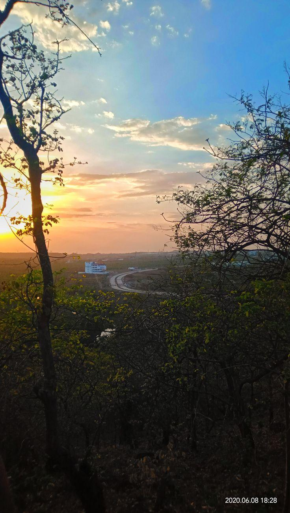
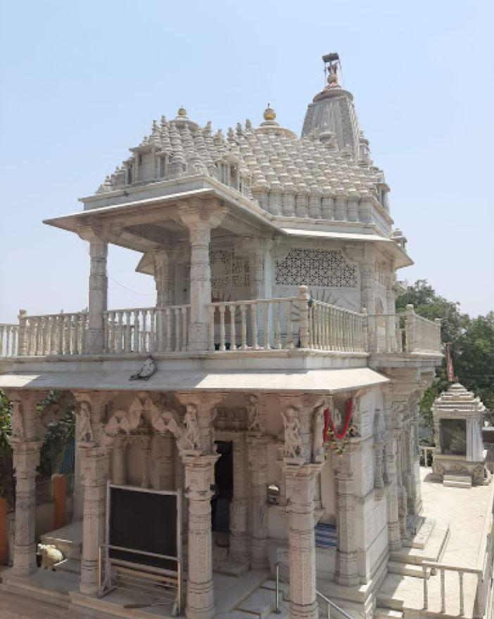
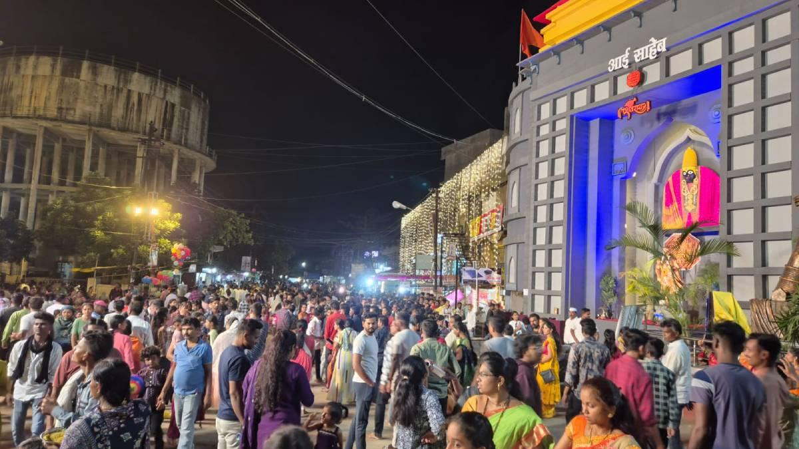
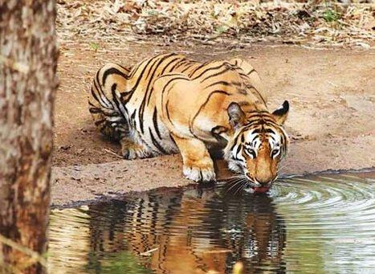
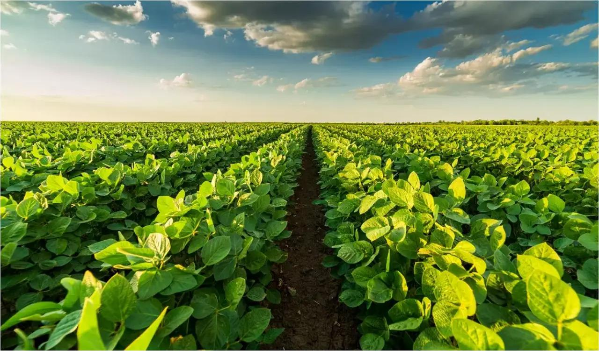
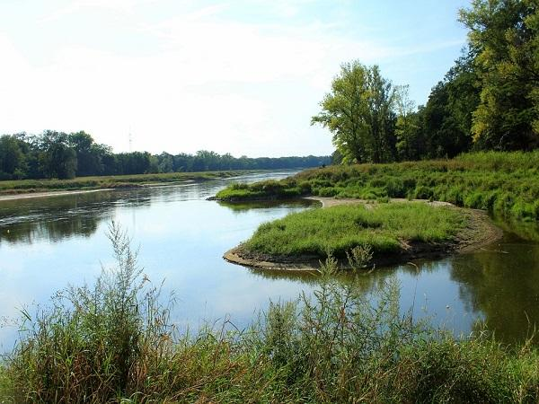
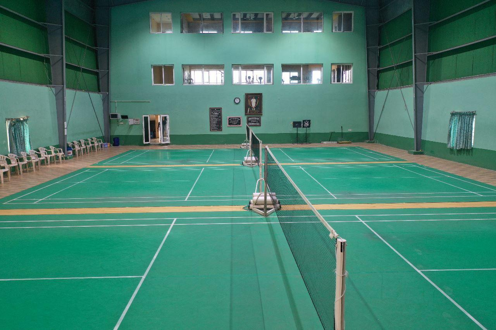

About

Derived from the Marathi words "Yavat" (mountain) and "Mal" (row), Yavatmal is situated on a plateau at an average elevation of 445 meters. Located roughly 156 km west of Nagpur, it serves as the administrative center for the Amravati Division. Known for its relatively high altitude and pleasant weather, it was even classified as a hill station during the British Raj.
- Location:Located in the eastern part of Maharashtra state in India, within the Vidarbha region, roughly 156 kilometers west of Nagpur.
- Famous as:The "Cotton Capital of Maharashtra" due to its massive cotton production, and famous for its tiger-rich Tipeshwar Wildlife Sanctuary.
History

Yavatmal’s history spans millennia, tracing back to the Vidarbha kingdom mentioned in the Mahabharata. It changed hands among numerous ancient rulers, including the Mauryas, Vakatakas, Chalukyas, and Rashtrakutas. By the time of the Mughal Empire under Akbar, it was designated as "Yot-Lohara." In the modern era, the district was heavily contested during the British and Nizam conflicts before becoming a vital district in independent Maharashtra.
- Yavatmal is a scenic city in the Vidarbha region of Maharashtra, India, famously known as the "Cotton Capital" due to its massive cotton farming. It sits on a high plateau, which gives it pleasant weather and beautiful green surroundings. The city is famous for its rich tribal history, grand Navratri festivals, and the popular Tipeshwar Wildlife Sanctuary, which is a great place to spot tigers.
Culture

The district is a vibrant melting pot characterized by a blend of modernity and ancient tribal traditions. While Marathi is the primary language, communities also converse in Gormati, Banjari, Gondi, and Marwari. Yavatmal is renowned for its grand, statewide celebrated Navratri (Durga) festival, which reportedly ranks second in scale only to Kolkata. Locals also celebrate festivals like Gudi Padwa, Diwali, and Ambedkar Jayanti with community-wide gatherings.
- Main Festivals:Navratri (the grandest event), Gudi Padwa, Diwali, Polo, and Ambedkar Jayanti.
- Traditional Arts:Banjara embroidery, Gond tribal paintings, and local folk dances.
- Language:Marathi is the main language, along with Gondi, Banjari, and Hindi.
Tourism

Yavatmal offers remarkable eco-tourism and heritage sites. The crown jewel of the district is the Tipeshwar Wildlife Sanctuary, a premier destination for tiger sightings, leopards, sloth bears, and rich avian life. Other prominent attractions include historical landmarks like the Mahakali Temple and scenic spots along the Wardha and Painganga rivers that define the district's borders.
- Tipeshwar Wildlife Sanctuary: This is a beautiful forest reserve packed with wildlife. It is highly famous for its healthy tiger population, making it a hotspot for jungle safaris. Visitors can also spot leopards, sloth bears, deer, and many rare birds.
- Sahstrarakund Waterfall: This is a spectacular natural waterfall located on the Penganga River. The water plunges down unique black rock formations that look like large steps. It is a favorite picnic spot, especially right after the monsoon season when the water rushes with great force.
- Chintamani Ganesha Temple (Kalamb): This is a highly revered, ancient temple dedicated to Lord Ganesha. The unique feature of this temple is that it is built entirely underground. It also houses a sacred natural water tank called the Ganesh Kunda, which devotees believe has spiritual properties.
Famous Food

The local cuisine is a hearty reflection of Vidarbha and Khandesh flavors. Street food is immensely popular, with local favorites including the famous Goli Vadapap (and palak makai) served at Pangari, Shegaon Kachori, and delicious Pyaz ki Kachori. Traditional Maharashtrian vegetarian and non-vegetarian dishes, alongside a burgeoning café culture featuring espresso lattes and masala drinks, define the dining scene in hubs like Civil Lines and the Peshwe Plot.
- Famous Food:Shegaon Kachori (a crispy, deep-fried pastry stuffed with a spicy mix of lentils and served with fresh green chilies).
- Local Specialty:Goli Vada Pav (a popular local version of the classic Maharashtrian potato burger served hot at local stands).-
Economy

Often dubbed the "Cotton District," agriculture forms the backbone of Yavatmal's economy. Apart from cotton, farmers produce soybeans, tur, and wheat. The city also houses large-scale industrial textile facilities, such as the Raymond UCO denim mill, and a developing textile Special Economic Zone (SEZ), establishing it as a commercial heavyweight in the state.
- Key Industries:Textile manufacturing (including large denim mills like Raymond UCO) and cotton ginning factories.
- Main Crops:Cotton (the region's primary cash crop), soybeans, tur (pigeon peas), and wheat.
Environment

Roughly 20% of the district's land is adorned with dense, bio-diverse forests that yield valuable timber like teak and bamboo. The environment is shaped significantly by the Wardha and Penganga rivers, which facilitate local irrigation but also create dynamic ecological flood zones during the monsoon season. This natural cover sustains a fragile, protected ecosystem supporting the region's diverse flora and fauna.
- Climate:Hot and dry summers with temperatures often crossing 40°C, followed by a heavy monsoon season from June to September and mild winters.
- Key Rivers:Wardha River and Penganga River, which flow along the borders of the district and provide water for farming.
- Protected Areas:Tipeshwar Wildlife Sanctuary and Painganga Wildlife Sanctuary, which protect tigers, leopards, and large forest ecosystems.
Sports

Yavatmal actively promotes a culture of physical fitness and athletics. Local youth frequently participate in traditional regional sports like Kabaddi and Kho-Kho, which hold immense cultural significance. The district also features local cricket leagues, football, and athletic events held in community grounds, while regional authorities continuously foster training programs to encourage younger generations to pursue sports at state and national levels.
- Traditional Sports:Kabaddi, Kho-Kho, wrestling (Dangal), and local cricket leagues played on open community grounds.
- Focus:Youth fitness, promoting regional athletic talent, and training programs to help players reach state and national sports levels.